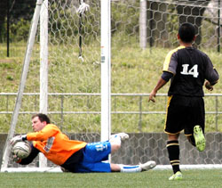

|
Hodogaya koen, Saturday 3rd April.

Sakura in bloom, sunshine, and a perfect pitch all combined to provide the perfect setting for a pre-hanami showdown at Yokohama’s Hodogaya complex.
The opposing teams went into the game with contrasting recent records. Celts second’s had scraped a 2-1 victory over foot of the table Guarana Republic, whilst the Pumas were still searching for their first 3 points of 2010.
The Pumas line up of late has started to look much more settled and it was bolstered by the attacking presence of Panthers regular goal scorer Sho. The Celts had the clear height and weight advantage, but with such a wide and spacious pitch in use it would be the more streamline players who would benefit.
Initially it was the Celts who started the livelier of the two, with a strong and mobile (well for Div 3) midfield combination playing some good one-two football. Their possession was to be rewarded with an early goal inside 10 minutes. The Pumas were caught in possession and a through ball fell into the path of the Celts front man who beat Kieran in a one-on-one. 1-0 Celts.
The first goal proved to be a wake up call and it wasn’t long after that the Pumas began to claw their way back into the tie. The Pumas ‘engine room’ of Ian and Tom had their hands full, and it appeared that Tom’s touch had been left somewhere in Kansai after a two week lay off, but as usual hard tackling and effort was still in abundance.
As the half progressed Romen’s cool head at the back and the pace of Sho began to test the Celts, it was at this stage that the Pumas also began to get going in midfield. It was only a matter of time before things were back to scratch. Played from the back the ball found its way to Sho who was able to beat the ageing Celts back four, even 20 years ago they would not have caught him, to hit a sweet finish that made it all square. 1-1 after 15 minutes played.
The Pumas momentum snowballed and tactically they got things spot on by using the broad pitch to their advantage. Billy Whizz, aka Scott Tulis, was introduced down the right and soon gave the Celts fullbacks something to think about. A number of runs led to one too many ineffective final balls, much to the frustration of the veteran target man Sid Lloyd. On a number of occasions Sid found himself isolated by the well organised and systematic (put your foot through anything in the 18 yard box) Celts defence. Indeed it was Tulis who was to put Pumas in a somewhat unfamiliar position, the lead!
Scott’s trademark kick and run has beaten many a division 3 full back however it has been lacking the end product. Rumours had circulated that Scott has been working hard on his finishing to get himself on the score sheet, if only to save himself from an ear bashing by Sid. Easily beating the defender for pace Scott cut in from the right flank to drive a thunderbolt of a shot across the box and into the left hand corner of the goal. Let’s hope that is the first of many.
Other than the odd set piece it was the Pumas who had looked the most threatening and went in 2-1 up on the half time whistle.
The Pumas started the livelier in the second half. Fairies, unicorns, the Easter Bunny, many thought they would see them long before a much rarer sight; a Nick Webb bicycle kick, but yes it was on display during his second half, 10 minute industrious spell. (See photograph for evidence. Although many have speculated the authenticity of the photograph, it can be confirmed that this is not photo shopped!) Nick and Tom in midfield, who had now got his touch, were doing a fine holding job on the Celts midfield. Although Celts No’14 was able to run with the ball his teammates were troubled in keeping up with him and other than a number of corners and a fine finger tipped save Kieran was rarely troubled.
In fact it turned out to be another Pumas mistake that gifted the Celt’s seconds their second. A break down in communication between Ian and Tom saw the ball once again fall kindly for the Celt’s front man who was able to bring the tie level, 2-2.
As the last 15 approach there looked like only one winner, with debutant Steve winning everything at the back and as Romen pushed up into midfield the Pumas went for the winner. Tom moved out wide and made a couple of pitch length runs but to no avail. A couple of heading opportunities fell to Sid and Ian but once again it wasn’t enough to trouble the Celts keeper.
So it finished 2-2, two well struck goals for the Pumas and two mishaps that led to the Celts walking away with a point. The Pumas would have been the more disappointed of the two teams however when you are off to sit on plastic sheets under pink trees and get drunk a point cannot be seen as all that bad.
Report by Thomas Sheard
|